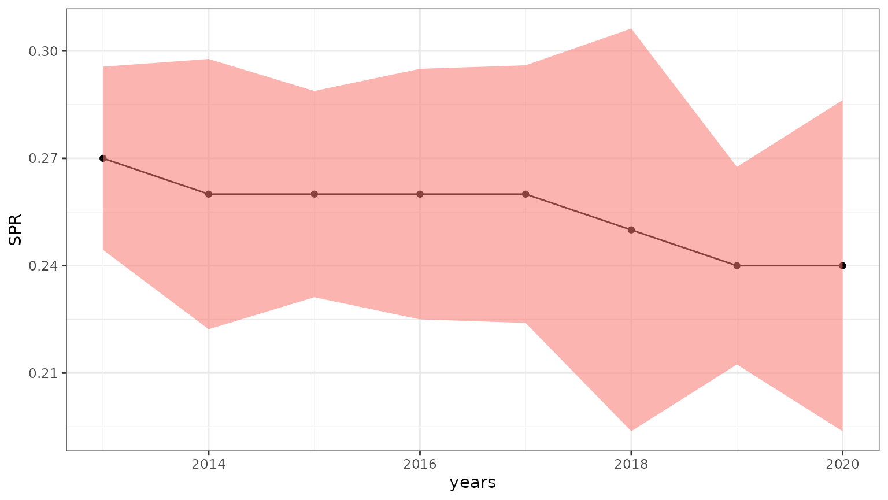
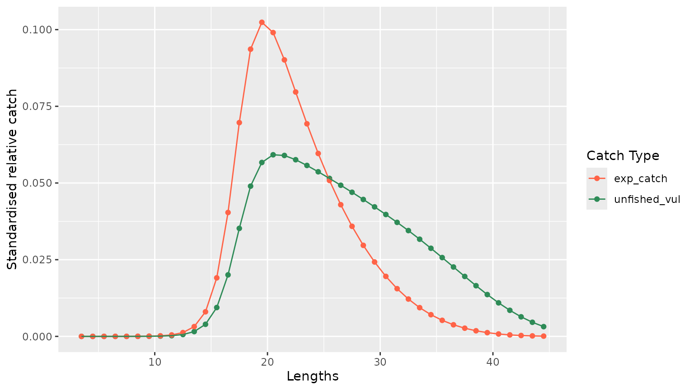
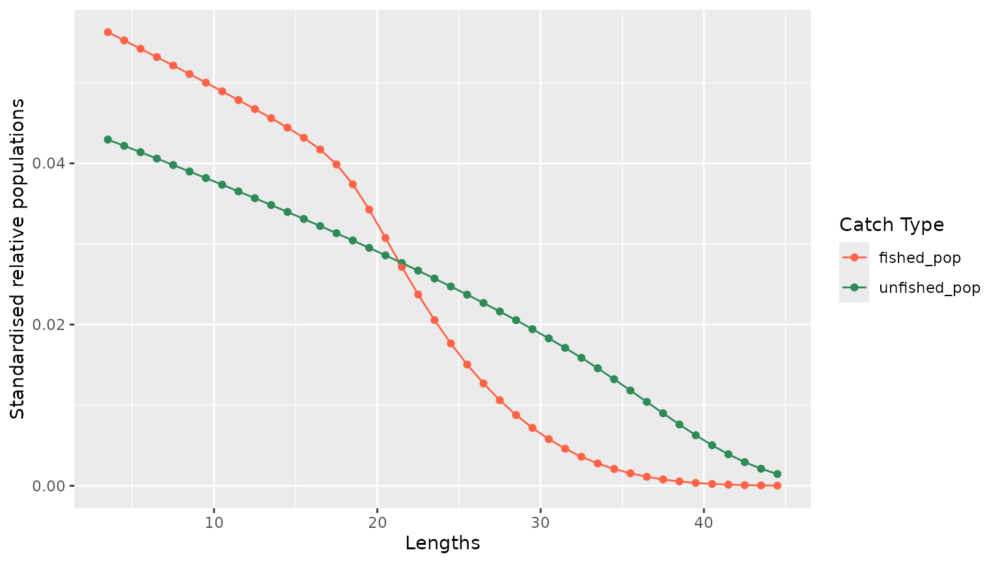

LB-SPR tutorial
lbspr_use_case.Rmd1. Install lbmstoolbox
To run this vignette, install lbmstoolbox in one of R’s
library paths. Install it system-wide with
devtools::install_github() or locally with
renv::install(). When running the source interactively, use
the vignettes directory as the working directory so that
the bundled data file can be found.
2. Read sampling and biological data
The bundled example contains catch and biological data. Its first
element, catch_data, holds the catch length composition in
two forms: a long data frame with year–length
observations in rows, and a wide data frame with length
classes in rows and years in columns. Both use MeanLength
for the length-class column.
The second element contains the biological parameters for the evaluated species.
spp_sampling_details <- readRDS("data/spp_test_data.rds")2.3 Biological parameters
spp_sampling_details$bio_params
#> $linf
#> [1] 42.41
#>
#> $k
#> [1] 0.21
#>
#> $t0
#> [1] -1.202
#>
#> $lwa
#> [1] 0.012
#>
#> $lwb
#> [1] 3.011
#>
#> $l50
#> [1] 19.45
#>
#> $M
#> [1] 0.354
#>
#> $max_age
#> [1] 9
#>
#> $rec_variability_mean
#> [1] 0.748
#>
#> $rec_variability_sd
#> [1] 0.293
#>
#> $max_age
#> [1] 9
#>
#> $fecb
#> [1] 3.011
#>
#> $l95
#> [1] 22.373. Run LB-SPR
3.1 Build biological parameters for LB-SPR
See the LBSPR
documentation for parameter definitions. fecb is the
exponent in the size–fecundity relationship. LB-SPR defaults to
3; here, it is set to the supplied exponent from the
weight–length relationship.
The example biological-parameter list contains fields for both LB-SPR
and LIME. Remove the LIME-specific fields and derive LB-SPR’s
mk parameter.
bio_params <- spp_sampling_details$bio_params
# We need to provide MK
bio_params$mk <- round(bio_params$M / bio_params$k, 2)
# ... And get rid of those that not required
bio_params$M <- NULL
bio_params$t0 <- NULL
bio_params$max_age <- NULL
bio_params$rec_variability_mean <- NULL
bio_params$rec_variability_sd <- NULL
bio_params
#> $linf
#> [1] 42.41
#>
#> $k
#> [1] 0.21
#>
#> $lwa
#> [1] 0.012
#>
#> $lwb
#> [1] 3.011
#>
#> $l50
#> [1] 19.45
#>
#> $max_age
#> [1] 9
#>
#> $fecb
#> [1] 3.011
#>
#> $l95
#> [1] 22.37
#>
#> $mk
#> [1] 1.693.2 Run LB-SPR
With simul = TRUE, the wrapper runs LB-SPR’s simulator
for each time step and returns:
- Observed catch-at-length
- Observed catch-at-length, scaled to sum to one
- Standardised fished and unfished population-at-length structures
- Standardised estimated catch after applying estimated selectivity to the fished population
- Standardised estimated catch after applying estimated selectivity to the unfished population
iim_lbspr <- lbmstoolbox::LbsprLbms$new(
bio_params,
catch_data
)
result_lbspr <- iim_lbspr$run(simul = TRUE)
#> A blank LB_pars object created
#> Default values have been set for some parameters
#> File not found. A blank LB_lengths object created
#> Fitting model
#> Year:
#> 1
#> 2
#> 3
#> 4
#> 5
#> 6
#> 7
#> 8
#> ngtg increased to 18 because of small bin size
#> ngtg increased to 18 because of small bin size
#> ngtg increased to 18 because of small bin size
#> ngtg increased to 18 because of small bin size
#> ngtg increased to 18 because of small bin size
#> ngtg increased to 18 because of small bin size
#> ngtg increased to 18 because of small bin size
#> ngtg increased to 18 because of small bin size3.3 Breaking down results
Results have two components: evaluation, which contains model estimates, and simulation, which contains the additional simulation output. The latter also retains the raw LB-SPR simulation output.
The estimates data frame also includes confidence intervals for
FM and SPR, with lower_ and
upper_ prefixes.
3.3.1 Estimates dataframe
result_lbspr$evaluation$estimates %>%
head(3)
#> SL50 SL95 FM SPR years lower_spr upper_spr lower_fm upper_fm
#> 1 17.43 20.45 1.20 0.27 2013 0.2444028 0.2955972 1.096203 1.303797
#> 2 17.44 20.49 1.22 0.26 2014 0.2222500 0.2977500 1.026131 1.413869
#> 3 17.43 20.43 1.24 0.26 2015 0.2311834 0.2888166 1.047280 1.4327203.3.2 Simulation dataframes
The simulation data frame includes the following columns for each time step:
-
unfished_pop: length structure of the unfished population -
fished_pop: length structure of the fished population -
unfished_vul: estimated catch from the unfished population after applying selectivity -
exp_catch: estimated catch from the fished population after applying selectivity -
real_catch: observed catch in absolute numbers -
relative_catch: observed catch scaled to sum to one
result_lbspr$simulation$model_info %>%
head(3)
#> year lengths unfished_pop fished_pop unfished_vul exp_catch real_catch
#> 1 2013 3.5 0.04295017 0.05594507 0.000000e+00 2.357449e-07 0
#> 2 2013 4.5 0.04217148 0.05492970 0.000000e+00 6.136485e-07 0
#> 3 2013 5.5 0.04138486 0.05390612 1.000001e-06 1.596534e-06 0
#> relative_catch
#> 1 0
#> 2 0
#> 3 04. Plot examples
4.1 Estimates plot
A quick example on how to plot SPR and its confidence interval is shown below.
estimates <- result_lbspr$evaluation$estimates
g <- estimates %>%
ggplot2::ggplot(ggplot2::aes(x = years, y = SPR)) +
ggplot2::geom_point() +
ggplot2::geom_line() +
ggplot2::geom_ribbon(ggplot2::aes(x = years, ymin = lower_spr, ymax = upper_spr, fill = "maroon2", alpha = 0.1)) +
ggplot2::theme_bw() +
ggplot2::theme(legend.position = "none")
g
4.2 Simulation plot
The first plot compares estimated catch from the fished and unfished populations in 2015. The second compares the corresponding population-at-length structures.
4.2.1 Estimated catch
catch_2015 <- result_lbspr$simulation$model_info %>%
dplyr::filter(year == 2015) %>%
dplyr::select(lengths, unfished_vul, exp_catch) %>%
tidyr::pivot_longer(!lengths, names_to = "variables", values_to = "values")
g <- catch_2015 %>%
ggplot2::ggplot(ggplot2::aes(x = lengths, y = values, color = variables)) +
ggplot2::geom_point() +
ggplot2::geom_line() +
ggplot2::xlab("Lengths") +
ggplot2::ylab("Standardised relative catch") +
ggplot2::scale_color_manual(
name = "Catch Type",
values = c(
unfished_vul = "seagreen",
exp_catch = "tomato"
)
)
g
4.2.2 Estimated populations
population_2015 <- result_lbspr$simulation$model_info %>%
dplyr::filter(year == 2015) %>%
dplyr::select(lengths, unfished_pop, fished_pop) %>%
tidyr::pivot_longer(!lengths, names_to = "variables", values_to = "values")
g <- population_2015 %>%
ggplot2::ggplot(ggplot2::aes(x = lengths, y = values, color = variables)) +
ggplot2::geom_point() +
ggplot2::geom_line() +
ggplot2::xlab("Lengths") +
ggplot2::ylab("Standardised relative populations") +
ggplot2::scale_color_manual(
name = "Catch Type",
values = c(
unfished_pop = "seagreen",
fished_pop = "tomato"
)
)
g